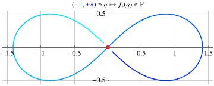
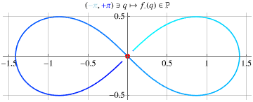
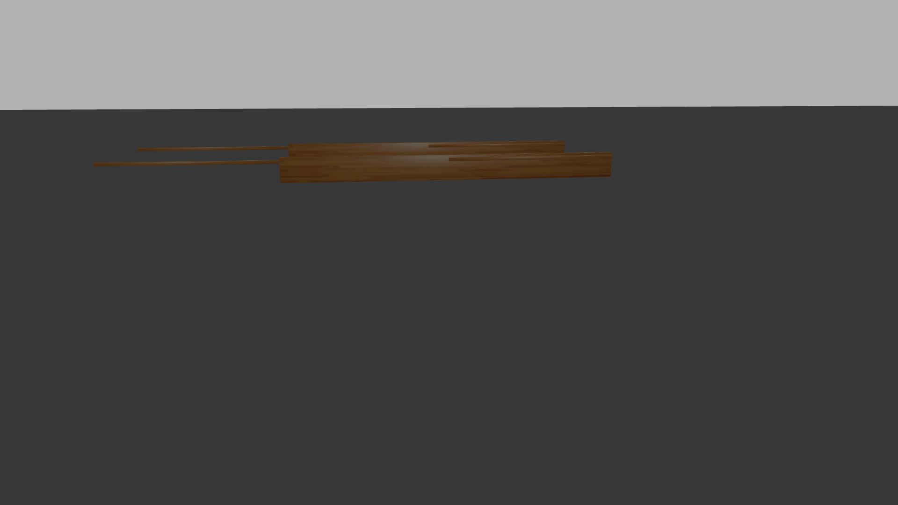
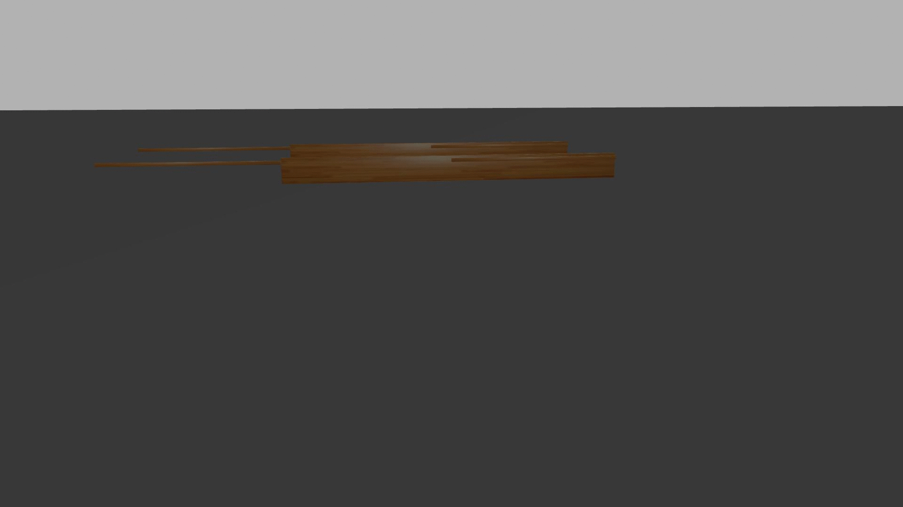
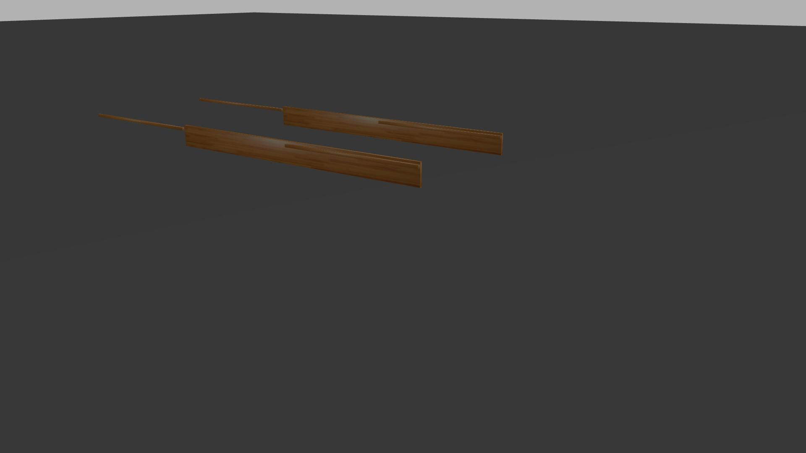

When position space is not a manifold, funny behaviours may exist:


When a mechanical system starts close to a “singular configuration”, its behaviour can be drastically different for two different configurations arbitrarily close to the “singular configuration”.
Below, we have two identical planar rigid-body pendulums, starting from very similar initial conditions (and close to the singular configuration). Notice how the two pendulums behave in distinct ways (even converging to different equilibria configurations).
Next, we show four snapshots: notice how they start with ‘‘the same’’ configuration, and end up with different trajectories. (For illustration purposes, a high friction and small gravity was chosen.)




Next, we show gifs, for the same mechanical system, seen from three different perspectives. (For illustration purposes, a high friction and small gravity was chosen.)
view from the ‘‘front’’

view from the ‘‘left side’’
view from the ‘‘right side’’
